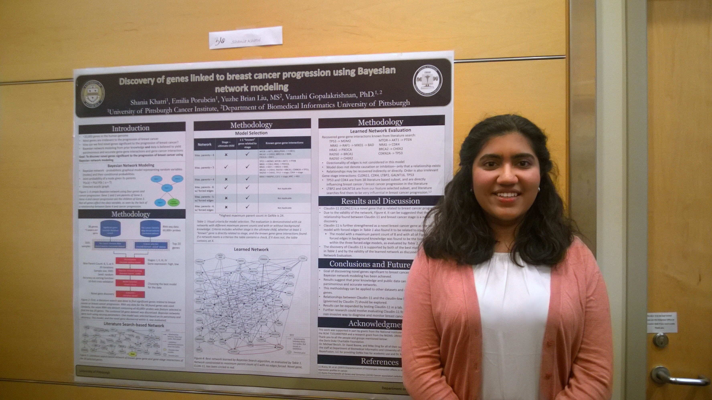
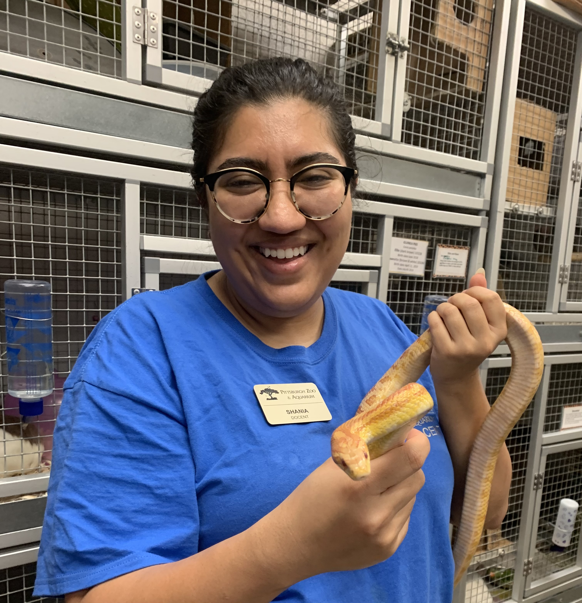

About Me

I am currently a research scientist at the University of Pittsburgh. I have a B.S. in Biology from Georgia Institute of Technology and am a 2018 Stamps President’s Scholar.
At the University of Pittsburgh I study evolution as it pertains to antibiotic resistance. I am currently running 2 projects focusing on evolving de novo vancomycin resistance in MRSA, and using machine learning to predictively model resistance potentiation to the antibiotic Zerbaxa.
I have a background in bioinformatics and infectious disease research, with earlier projects looking at computational gene discovery in breast cancer, patient-specific clinical modeling, and virulence in avian influenza.
I have a variety of other coding and programming projects which you can find on my
GitHub page. You can read more about any of my projects by following the links above, or by visiting the appropriate
page from my homepage. If you'd like to get in touch with me, just send me an email at
shania.khatri@gmail.com.
Research

MRSA accounts for over 100,000 bloodstream infections annually worldwide and over 20,000 of these infections result in death.
Clinicians rely solely on intravenous courses of the antibiotic vancomycin to clear these infections. With such widespread use and reliance,
the chances of vancomycin resistance occurring in MRSA is likely an inevitability with catastrophic effects.
I first began working in 2021 as a research scientist at University of Pittsburgh to understand if multi-drug resistant MRSA
(methicillin-resistant Staphylococcus aureus) could develop the necessary genetic mutations to defeat the only antibiotic effective against MRSA, vancomycin,
making it potentially invincible. We’re currently in the process of successfully evolving vancomycin resistance in MRSA. Then, through careful study in the lab,
we can use these evolved superbugs to quantify the level of threat that vancomycin resistance poses to vulnerable patients in the clinic.
My secondary project looks at potentiation, or the underlying harmless mutations that in the right context can drive important factors like antibiotic resistance.
I study potentiation in relation to the drug-bug combination of Zerbaxa and Psuedomonas aeruginosa. Through machine learning modeling of in vitro evolution, we seek
to predict those infections where resistance will arise. Partnering with UPMC, our research is the future of applying personalized medicine approaches to patients in
the infectious disease space.
Projects

The Summer College Research Internship
I was the PI on a grant proposal for the Georgia Tech College of Science’s Sutherland Strategic Award. Our grant made history as the only undergraduate
proposal to be funded and I became the founder and director of The Summer College Research Internship, an undergraduate-lead program that matches community
college students from underrepresented backgrounds with full time summer research positions at Georgia Tech College of Sciences and assists in their academic
and career development. Our fully undergraduate lead team successfully designed and executed program curriculum to ameliorate ‘pipeline leakage’ and promote
belonging and inclusion for underserved students in science research. This program was funded for multiple years and continues to provide young community
college students with their first research opportunities under the direction of successive undergraduate classes.
Learn more about SCRI on their website.
Experience

I’m an Emergency Medical Technician (EMT), certified to 2+ years, specializing in pre-hospital care, patient management, and ambulance operation.
I work at Foxwall Emergency Medical Services in Pittsburgh, PA on the emergency and non-emergency transport line.
I spend a lot of time as a patient care volunteer at St. Margaret’s Hospital in Pittsburgh, PA. I specialize in two departments, the Emergency Department
and the outpatient ward of the Hillman Cancer Center. I restock supplies, sit with patients without a support person, and aid staff and patients in a variety
of ways.
I am a docent at the Pittsburgh Zoo & Aquarium. I’m a specially trained volunteer who gives educational talks, do guided tours, handle small animals, and
run specialty zoo events.
Awards

2023 United Nations - Millennium Fellowship, Campus Director and Fellow
2022 Astrobiology Science Conference, – Oral Presentation
2021 Best Poster – Doris Duke Charitable Foundation Undergraduate Internship
2018 Stamps President’s Scholarship, Georgia Institute of Technology, a merit based, full ride scholarship awarded to the top
40 students out of 30,000 applicants.
2017 International Science and Engineering Fair
2017 American Medical Informatics Association – Poster
2016 American Medical Informatics Association – Oral Presentation
Press

SCRI Proposal Funded by the College of Sciences,
Honors Scholar recieves the United Nations Millennium Fellowship,
STEM Junction: The First Ever High School Bioinformatics Symposium,
If you'd like to get in touch, follow the link below to send me an email!